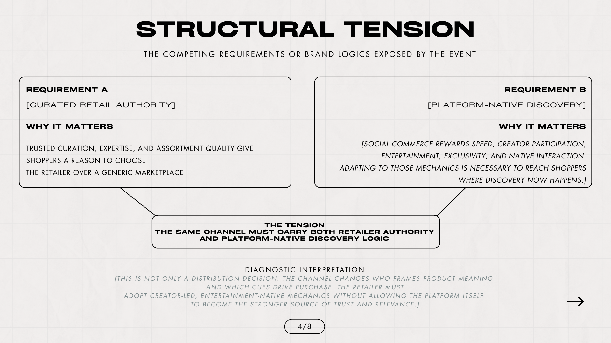

Start with an event.
Examine the tension.
I establish what changed, examine the competing requirements it introduces, and explain what they may mean for the brand. The diagnosis separates what the evidence supports from what still needs to be understood.
When a new channel changes how a brand is chosen.
An anonymized public-source sample
Social-commerce channel expansion

A clearer role for
the next decision.
In this sample, a retailer enters a channel shaped by creators, exclusive drops, and in-platform purchase. The diagnosis examines whether those mechanics extend its authority as a trusted curator or make that authority less visible.
That makes the channel’s role worth clarifying before the next decisions about creators, exclusivity, and product launches.
One event. A focused diagnosis. This sample does not establish a recurring pattern or measure customer response.
Read the full Signal Read ↗From one signal to a wider decision structure.
A Structural Clarity Brief examines multiple signals, recurring decision patterns, and the assumptions that may be sustaining them. Its broader evidence base supports strategic options and guardrails.
 Explore the Structural Clarity Brief ↗
Explore the Structural Clarity Brief ↗